梦百合 0压床垫案例解析前言许多国际大品牌背后不乏中国代工厂，而如何撕掉代工标签、打造自主品牌可以说是这类代工企业的“夙愿”。床垫制造行业的梦百合就是其中一个。梦百合的业务面向全世界，其中 80 %以上业务在海外，被称为“记忆绵床垫出口美国的大户”， 2019 年美国商务部甚至裁定对梦百合征收反倾销税。2018 年 3 月，梦百合找到华与华作为战略营销品牌整体顾问。合作至今近 3 年，也是梦百合国内自主品牌高速增长的 3 年（ 2018 、 2019 同比增长超 100 %， 2020 年上半年在家居行业普遍不景气的情况下逆势增长超过 30 %）。华与华帮助梦百合从 0 到 1 奠定了自主品牌的坚实基础，真正让自主品牌的建设之路每一步都没走弯路！梦百合董事长倪张根先生，也对和华与华合作 3 年做出了评价：“跟华与华合作有安全感，在这种安全感之下可以慢慢打磨自己的品牌资产，有些东西不能急！”一定有很多人好奇，梦百合从幕后到台前，从 0 到 1 建品牌、建渠道，直接对话消费者，这个国际床垫大牌背后的中国代工企业，究竟和华与华在一起做了哪些工作，让梦百合在竞争激烈的市场上有了一席之地？本期文章，我们将为你一一解读。
学习本文，你将学到：1 、外贸代工企业如何进入内循环，从 0 到 1 建立大品牌；2 、品牌资产观：超级符号、品牌谚语，为自主品牌插上腾飞的翅膀；3 、持续改善：打造 360 度卖货门店；4 、企业战略菱形模型：科学化经营，明确企业的经营使命和经营逻辑。
1企业寻宝、战略定心坚持 0 压品牌战略不动摇华与华两大工作原理：【 1 】企业战略工作原理：学习客户的业务，理解客户的业务，并用华与华企业战略菱形模型重新想象、重新设计客户的业务。【 2 】品牌创意工作原理：用超级符号的方法，降低企业的品牌营销传播成本，建立品牌资产，并高效积累品牌资产。一个企业能走到今天，总是因为他做对了一些事。再往下走遇到困难，很多时候是因为过往做对的事没有一以贯之、持续坚持。“企业寻宝” 是华与华服务每个新客户的第一步，就是在客户企业历史中寻宝，一定要把客户过去有价值的东西找出来、擦亮了、发扬放大，而不是一上来就全部改一遍。我们对梦百合过往的品牌营销动作进行了盘点梳理，我们发现梦百合有很多核心价值的资源禀赋：1 ）拥有多国专利技术认证——非温感记忆绵2 ）联合华住、锦江等各大酒店集团推出的 20 多万间「零压房」3 ）曼联官方全球床垫与枕类产品合作伙伴4 ）亚洲最大的记忆绵生产基地……尤其是在传统记忆绵基础上，创新升级并获得多国专利的非温感记忆绵技术，给它的床垫带来了独一无二的特性：慢回弹均衡承托、全面贴合（梦百合床垫与人体的贴合度平均 88 . 73 %、最高可达 97 . 8 %）、接近于 0 的压力分散效果。
但在营销推广端，我们也发现梦百合一度在“深度睡眠”和“零压”之间摇摆不定，使用过多个不同的广告语，每一句都缺少长期坚持，没有形成有效的品牌资产积累：●给你婴儿般的深度睡眠●畅销美国 零压生活 / 畅销美国 健康床垫●零压 重新定义睡眠● The Legend of Comfort……
▲梦百合使用过的 logo
而在这一时期，零压概念也开始在床垫行业兴起。仔细深挖，我们发现，梦百合是国内众多床垫品牌中最早提出 “ 0 压”概念的床垫制造商，可以说是当之无愧的“ 0 压床
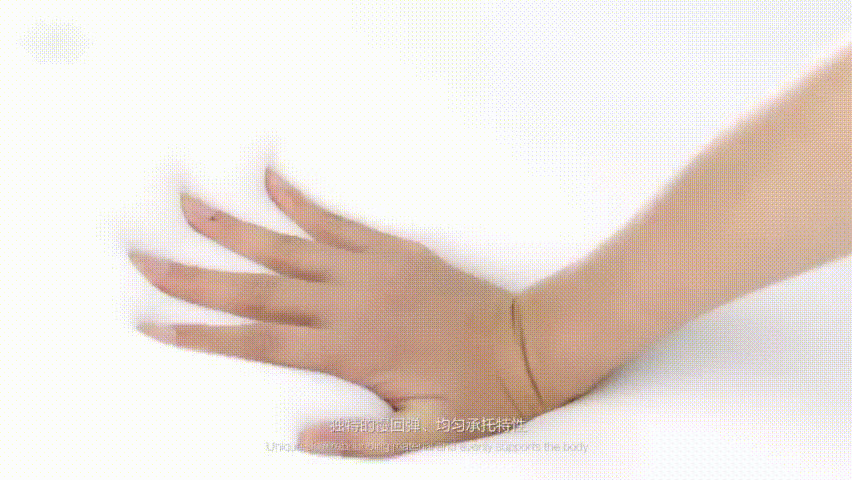
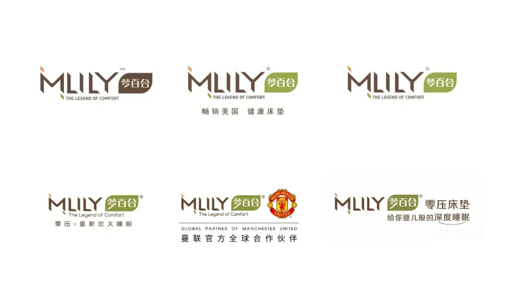
垫”概念开创者，围绕这一概念，也投入了不少的营销动作：· 2015 年 3 月，“零压生活 享梦中国” 2015 Mlily 梦百合(中国)品牌发布盛典；· 2015 年 9 月，作为畅销美国的中国家居品牌，梦百合董事长倪张根携零压家居产品亮相硅谷高创会；· 2015 年 11 月， Mlily 梦百合携手著名女性时尚杂志 ELLE 在京举办都市女性零压睡眠发布；· 2017 年 3 月，居然之家·索菲亚& Mlily 梦百合在北京举行 2017 “零压战盟”发布会；· 2017 年 5 月，梦百合零压版品牌传播登陆央视平台，倡导国人拥抱压力，尽情享受零压睡眠；· 2017 年 6 月，倪张根董事长做客 CCTV 《超越》栏目，发布《零压，让睡眠无压力》专题节目。
基于这些资源禀赋，最终我们选择了延续“ 0 压”作为品牌战略方向。而这背后的原因，可以用华与华方法中品牌资产原理和品牌成本原理来解读：品牌资产原理：品牌资产就是给企业带来效益的消费者品牌认知。做任何一件事，一切以是否形成资产、 保护资产、增值资产为标准。能形成资产的事情就去做，不能形成资产的就不要做，这样就能排除废动作。品牌成本原理：品牌存在的意义在于降低三个成本，第一是降低社会监督成本；第二是降低顾客选择成本；第三是降低企业营销传播成本。首先，基于品牌资产观，梦百合之前在“零压”已经做了不少投资。花时间越多的东西，壁垒越高，梦百合应该继续投资“零压”实现品牌资产的积累。
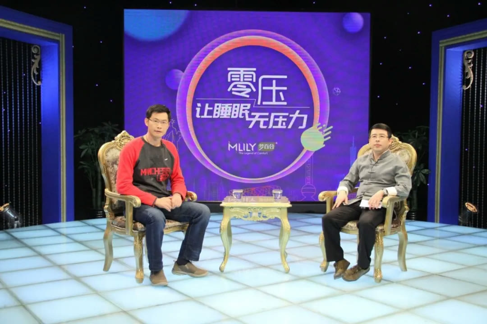
而且“零压”与“深度睡眠”相比，是一个更加通俗更可感知的词，“深度睡眠”是结果性词语，更像是某一种睡眠类型的学术用语，不利于传播。借用数字的魔力，我们将“零压”改为了消费者更容易理解、更容易识别的数字“ 0压”。背后的原因有以下几个：1 ）人们对数字更敏感；2 ）大写数字是中国汉字，仅在中国通用，小写数字是阿拉伯文字，全世界通用；3 ）从小最先学会的也是数字 0 。
然后利用“ 0 压”的技术壁垒建立新品类，区别于市场上的乳胶床垫和弹簧床垫，发挥品类价值，赢得 0 压床垫的解释权。从命名开始，延续梦百合产品特色，正式使用“梦百合 0 压床垫”的命名；确立“梦百合0 压床垫开创者”的品牌身份定义，用“开创者”绕开心理防线，降低营销传播成本，在消费者心中留下第一印象。现在事实也证明，“ 0 压战略”是正确无疑的。其表现就是当我们推出“ 0 压”后，众多品牌竞相模仿，竞争对手也好、行业友商也好，都用各种近义词、同义词、甚至原封不动地将“ 0 压”照搬用于产品描述、宣传推广当中。但这些并不会影响梦百合品牌的建立，因为除了法规上的商标注册之外，梦百合的产品特色和优势是谁都模仿不来了，最后你会发现其他品牌花了多少钱也抢不下来。比如，我们为厨邦酱油策划“晒足 180 天，厨邦酱油美味鲜”，海天马上就跟着来一句“不止晒足 180 天”，我们为洽洽策划“掌握关键保鲜技术”，所有坚果都用掌握“保鲜技术”了。
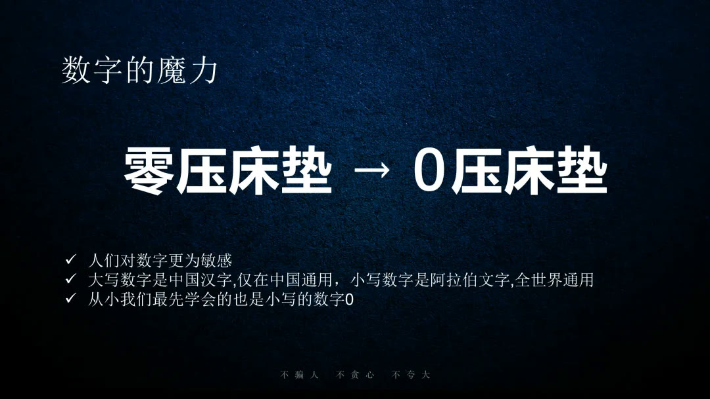
但是只有我们才知道我们自己是谁，那些跟随的企业没长性，他们今天一晃荡，明天他们又不一定说啥了，咨询在很多情况下，也都是判断、都是决策，而不只是那个方案本身。
2放大品牌与生俱来的戏剧性为梦百合插上腾飞的翅膀当我们确定了“ 0 压战略”和“梦百合 0 压床垫开创者“的品牌定义后，我们应该如何构建自主品牌的大厦？
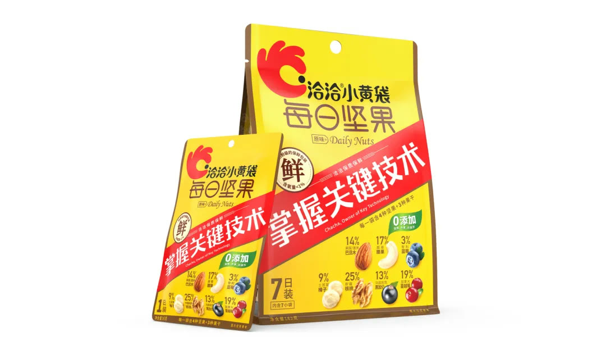
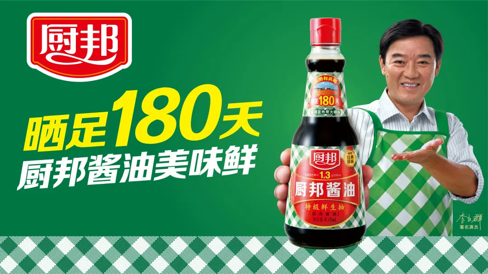
首先，我们回到品牌的本质。品牌的本质是降低三个成本（社会监督成本、顾客选择成本、企业营销传播成本），并且建构品牌资产。而品牌资产是能为我们带来效益的消费者品牌认知，其最终目的是，要让消费者买我产品，传我美名！在这里就需要提供能够供消费者识别、记忆、谈说的词语、符号、话语或故事。接下来我们通过华与华“品牌战略三角两翼模型”，来一一说明我们是如何为梦百合构建品牌的核心资产的。
历时 3年持续改善，产品话语大创意止于至善品牌谚语的创意，要看梦百合产品与其他同类产品的差异化价值具体在哪里，要找到属于梦百合最独特的购买理由是什么。我们深入研究发现，非温感 0 压绵专利技术所带来的创新价值，是梦百合最大的价值。梦百合产品科学：梦百合 0 压床垫是由获得多国专利的 0 压绵技术制成，独特的慢回弹特性，能够填补颈部、腰部、腿弯处的空隙点，使床垫与人体贴合度高度 97 . 8 %，身体重力均匀分散，人体受到的反作用力大大减小，从而减少频繁翻身状况，有效提高睡眠质量。
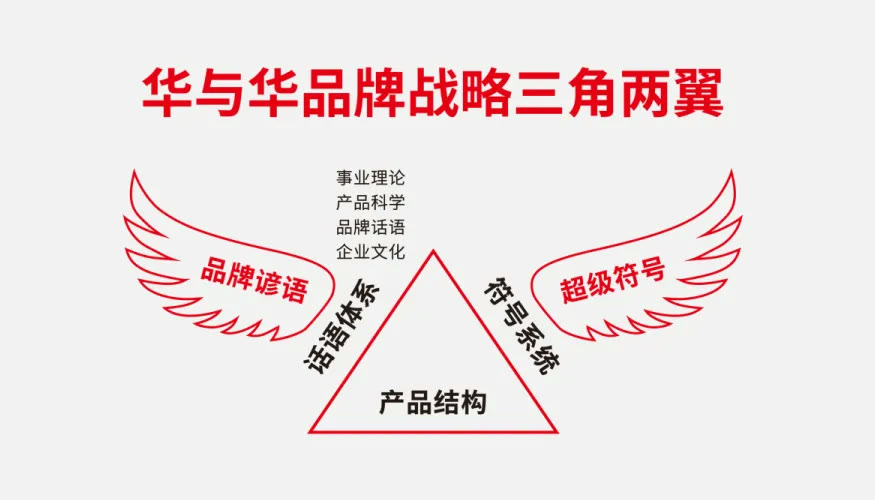
大连维特奥国际医院为梦百合所做的临床试验表明：相比传统床垫，使用梦百合 0 压床垫，可以帮助你入睡更快、睡得更好——平均初入睡时间减少 49 %，深度睡眠时间平均增加 13 %，最高增加 23 . 3 %。
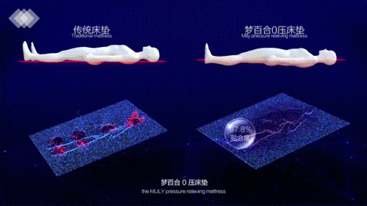
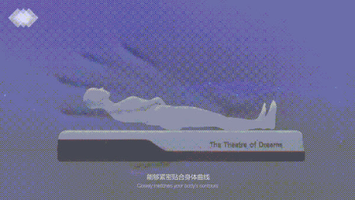
“ 0 压”是梦百合床垫产品的核心价值，是从客观层面上、物理特性上，梦百合区别于其他材质床垫的最大特点。简言之，就是睡在梦百合的床垫上，因为接近 100 %的贴合度，身体受到的压力趋近于 0 ，用一组切身体会的词语来描述就是：平躺腰部有支撑，趴着呼吸不闷胸，左右侧睡不压肩。
而从主观层面上，工作、生活压力大，则是导致现代人睡眠问题的主因。
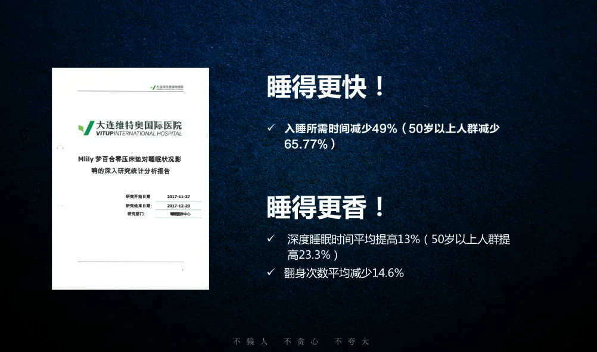
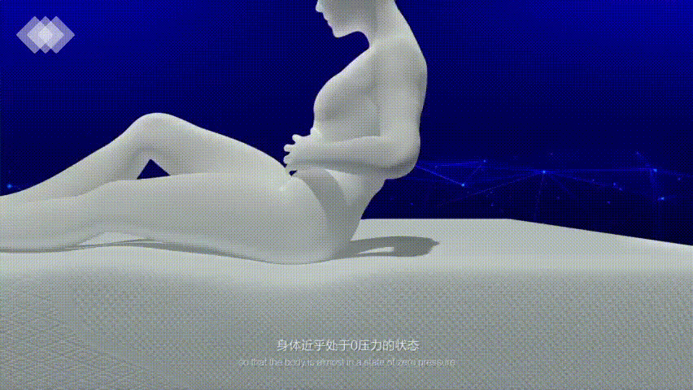
“压力”是生活中不断发生、循环往复存在的情景，我们放大这个戏剧，植入到梦百合0 压床垫的话语体系当中，创意了梦百合的品牌谚语——压力小、睡得好！
这一语双关的品牌谚语，既是提醒人们，缓解压力、释放压力、能够获得好的好睡眠，也是再次强调梦百合 0 压床垫，减缓压力提高睡眠质量的产品特性。品牌谚语的产生背后还有故事，“压力小，睡得好”是在华与华服务梦百合的第三年才创意得出，而这中间有赖于客户的信任支持。设计就是看图说话，嫁接童话原型花仙子，创造专属于梦百合的品牌超级符号“百合仙子”在找到华与华之前，梦百合对外推广的品牌形象一直以曼联球员为主，实际上是一种代言人策略。但是，曼联只能作为阶段性的引流使用，不会成为梦百合永久的品牌资产。
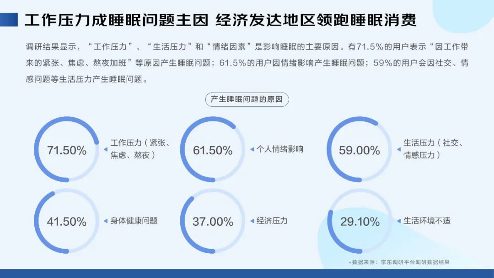
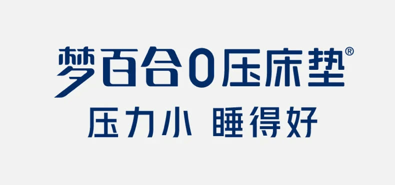
设计就是看图说话，只有这样成本才最低。对梦百合来说，标准就是所见即所得，一看就是梦百合。无论是英文“ MLILY （由 DREAM LILY 简化而来）还是中文的“梦百合”（由好梦百合简化而来），都有一个与生俱来的戏剧性嵌入其中—— LILY 百合花，再加上与睡眠相关的联想元素之后，梦百合的品牌超级符号就自然向我们走来了：百合花，是一个国内外人人都熟悉的一种花；花仙子，是一个古今中外反复被演绎、传咏的神话人物形象，有古代中国神话传说中的百花仙子，有近代美国迪士尼电影中的精灵花仙子，丹麦安徒生童话里的《花仙子》、日本卡通漫画中的花仙子……，各种各样的花仙子，由来已久；睡美人，一个东西方从小就知道的童话故事主角。
百合花+花仙子+睡美人+床垫=专属于梦百合的超级符号
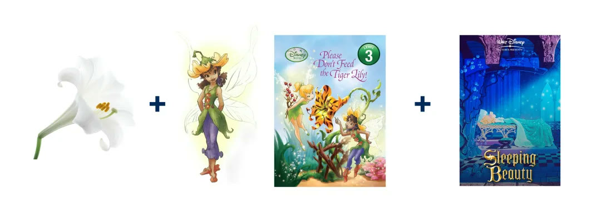
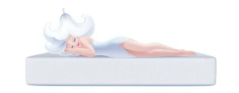
▲华与华为梦百合创意的超级符号
占据蓝色，唤醒文化元力，注入品牌活力梦百合品牌色，为什么会选用蓝色呢？心理学家告诉我们，蓝色的流行源于人类的进化过程，在人类还以狩猎跟采集的方式生活时，接近清澈的蓝天和水源让人更有可能活下来，经过漫长的时间，这种被蓝色吸引的倾向可能演变成了人类先天的偏好。加上在家居卖场里，使用蓝色的品牌相对较少，所以我们占据蓝色，成为我们的品牌标准色。
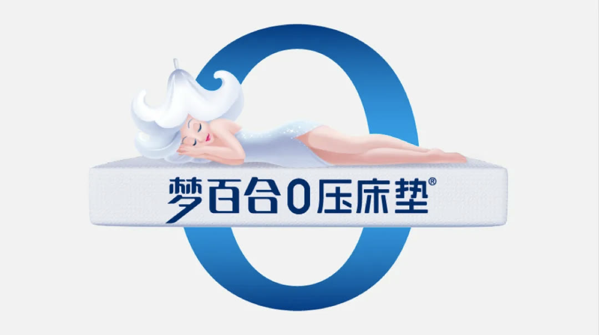
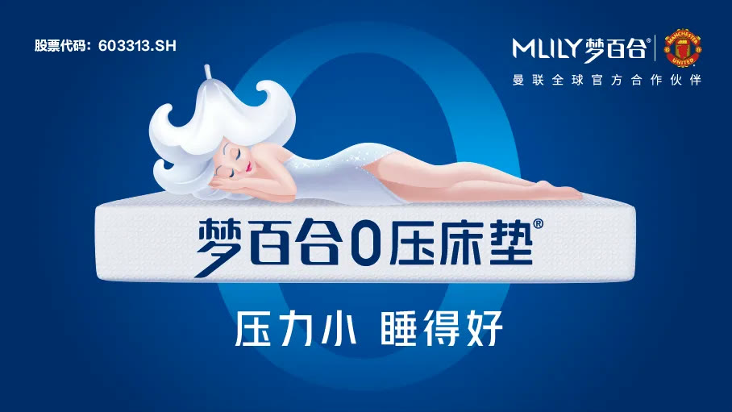
话语体系有了，超级符号有了，品牌的核心资产就有了，接下来就是如何将话语体系和符号体系推出去。我们在门店走访中发现，消费者对床垫科学并没有深入了解，对床垫的选择更倾向于认品牌，消费者的购买决策很大程度上取决于店员的推荐。如何利用现有资源持续积
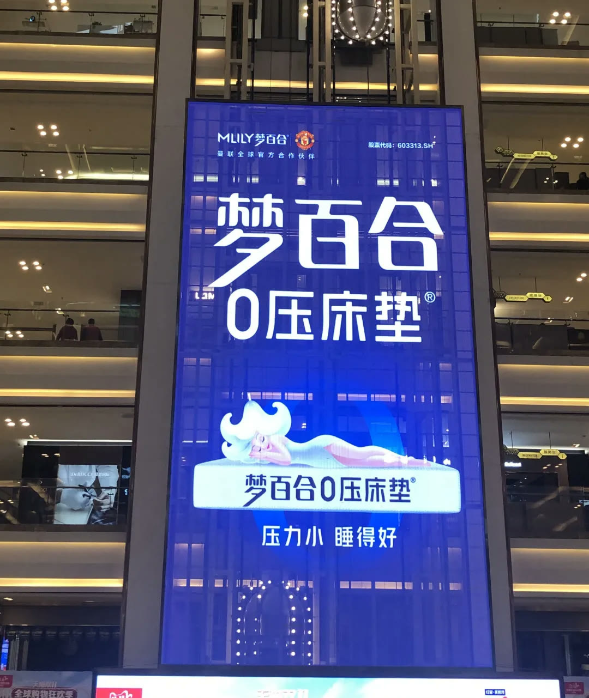
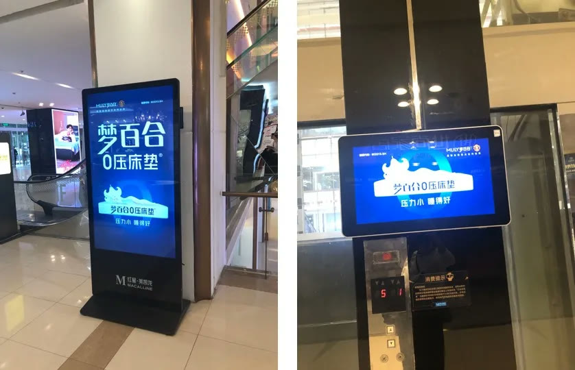
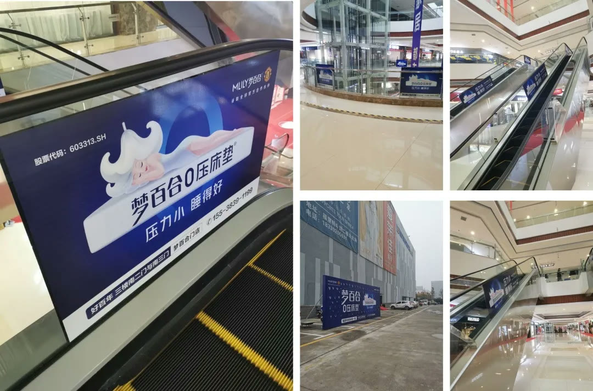
累品牌资产，扩大品牌认识呢？
3基于“货架思维”打造 360 度卖货门店相比欧美，中国床垫行业集中度低，床垫企业间的竞争很大程度上取决于渠道建设能力，拥有高效、优质的销售渠道的床垫企业在未来的竞争中将获得先机。梦百合零售渠道的两大流量来源是门店和电商。但门店人流量少的可怜， 2018 年 3月，我们在走访中发现上海家居卖场一周 7 天进店人流量在 20 人左右，能够在抓住有限的流量就成了我们的关键课题。我们利用华与华方法中的货架思维来思考：货架是指所有产品信息出现的地方，我们要在信息环境中击败竞争对手，让我们的产品在货架上获得跟消费者进行快速有效沟通的优势。对照梦百合家居卖场门店，卖场的通道就是货架，店招就是产品包装。所以梦百合的第一媒体就是门店。机关算尽，用超级符号打造超级门面根据消费者的阅读习惯，要想获得货架陈列优势，门面是吸引人注意的首要道具。根据现场观察，我们发现梦百合门店只有两处 logo 露出，且整体以黑色为主，在整个通道里很难吸引目光。
▲梦百合老门店
2018 年 4 月，华与华进行第一次终端门店改善大作战。对于门头，我们做了 3 个改善：1 ）增加门店百合仙子橱窗，在终端投资超级符号；2 ）增加门口两侧斜立面招牌，让来来往往走过的人远远就能看到，看到的同时还能被理解，我们是“梦百合 0 压床垫开创者、曼联官方合作伙伴”。3 ）门店就是广告位，外墙一定上信息，通过不同入口的信息重复，让每个顾客进入我的领地，都能接收到梦百合的信息。
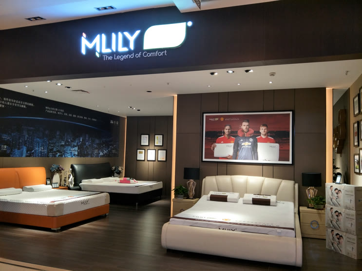
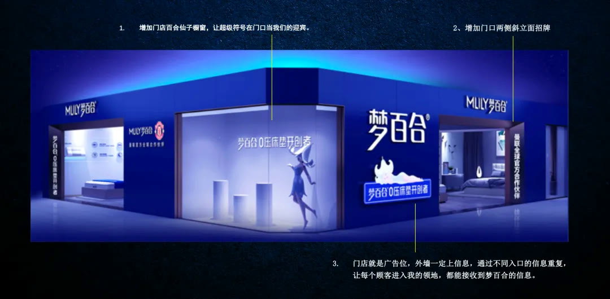
改善后月均销售额提高 338 %，同比增长 67 . 8 %。
2019 年 9 月 华 与 华 进 行 第 二 次 终 端 门 店 改 善 大 作 战 ， 改 善 后 日 均 注 意 率 提 升208 . 8 %，日均进店率提升 104 . 8 %。
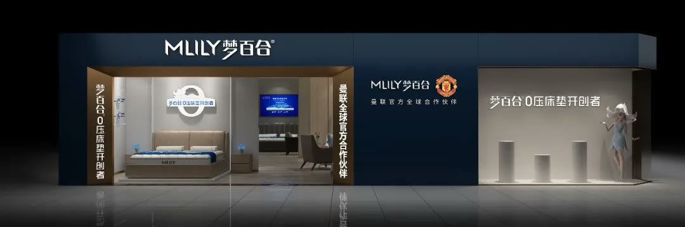
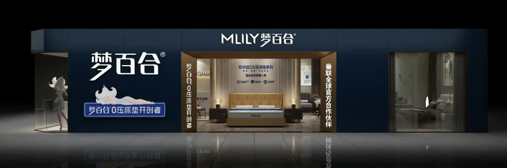
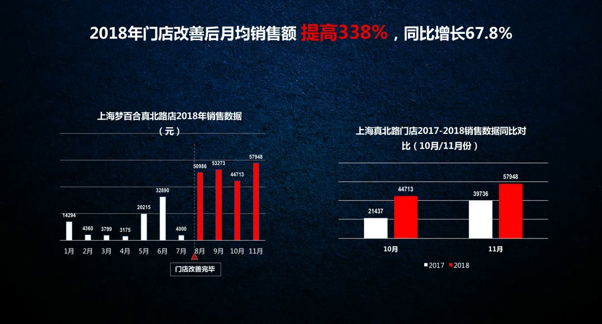
两次改善最终形成店内店外共 18 件标准物料，完成门店作为货架承担 4 大任务：●吸引受众注意 激发好奇●创造产品体验 引导决策●提供购买理由 鼓动尝试●降低选择成本 尝试体验
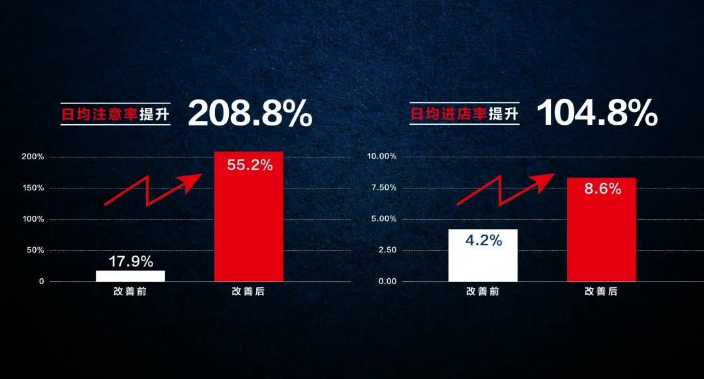
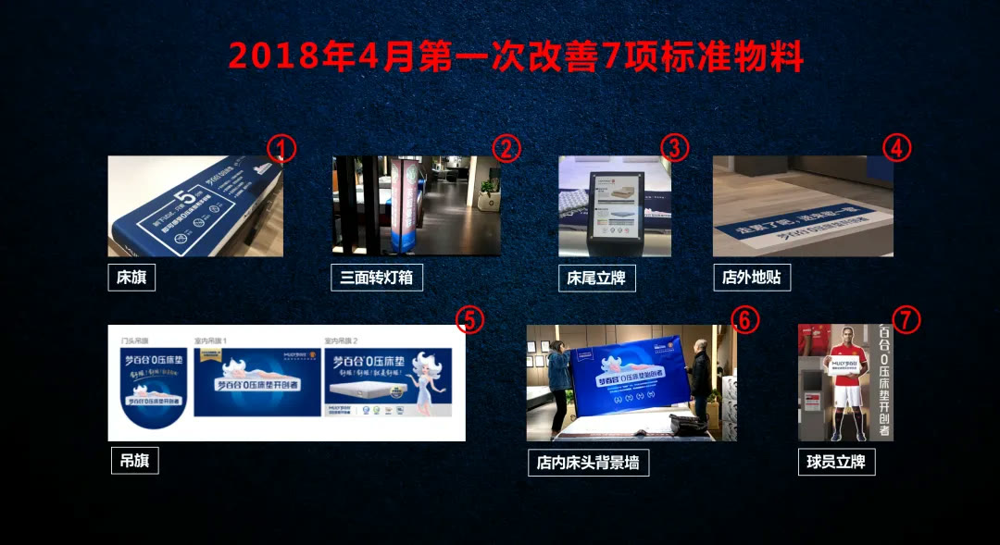
1 ）创造产品体验，引导购买决策：让消费者像我们希望的那样去体验、去思考、去选择。床旗：梦百合的产品决定了试躺必将带来更多的店内转化，而在走访过程中发现，很多顾客会用手按，用膝盖跪，只有导购极力推荐的情况下才会躺下试试，所以我们把“试躺 5 分钟”的邀请和正确的体验方式加在床旗上，就大大打消了顾客的疑虑。
▲床尾巾照片
2 ）提供购买理由，鼓动尝试：床尾立牌：一线导购反映，在人流较大期间，一些顾客进门无法及时接待会导致顾客流失；还有一些顾客不希望导购过多介绍，只想自己随意浏览。
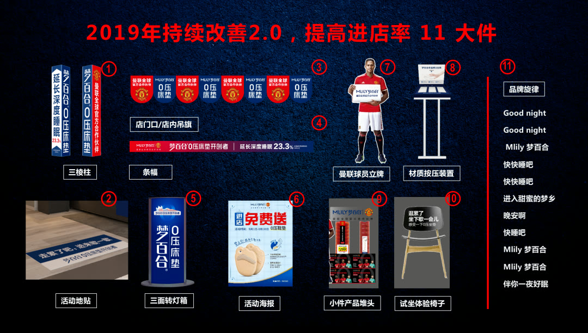
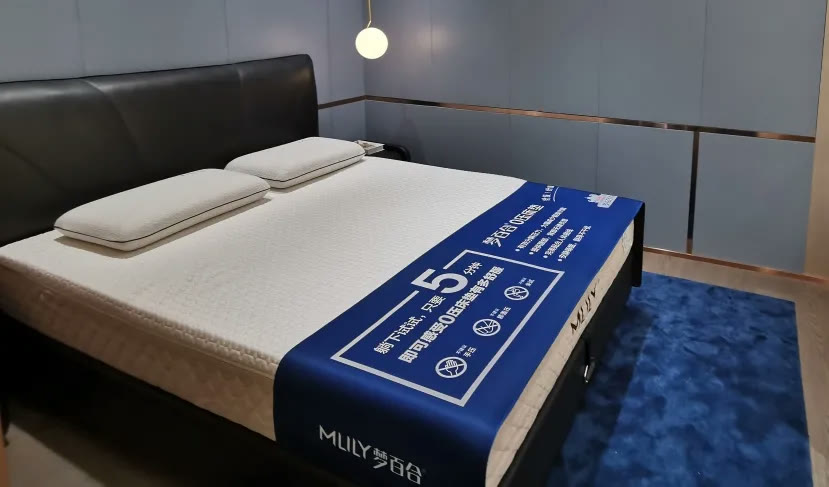
针对这些情况，我们增加了床尾立牌，一方面便于顾客自己浏览，另一方面也成为导购人员给顾客介绍的道具。
两次持续改善标准物料，两年内落地 400 +门店，形成梦百合门店固定品牌资产。
4规划品牌营销日历：不要打折促销，要品牌营销建材家居行业，常见营销方式叫“落地活动”，什么是落地活动，就是找一个由头打折优惠，你不打折不优惠顾客就不落地。时间长了，就形成了一种变相的打折促销，对于床垫行业来说更是如此，几乎月月有落地，落地必促销。但是华与华方法说两个词语：一个是投资、一个是资产，就是我所有的投资要在服务于当下那个目的的同时在长期也能建立起资产储蓄。从投资的角度，我们说营销是基于预期的投资。从资产的角度，我们说一个创意,如果没大毛病，就执行一百年,每年都做,让它成为品牌资产。今年以来我们上手重新再开发了梦百合大部分的落地活动，带来的成效也是非常显著。● 3 月“ 3 . 21 全民试睡节”● 5 月“ 51 · 0 压劳动节”● 6 月“ 618 老倪推荐日”（梦百合 0 压智能床品销活动）
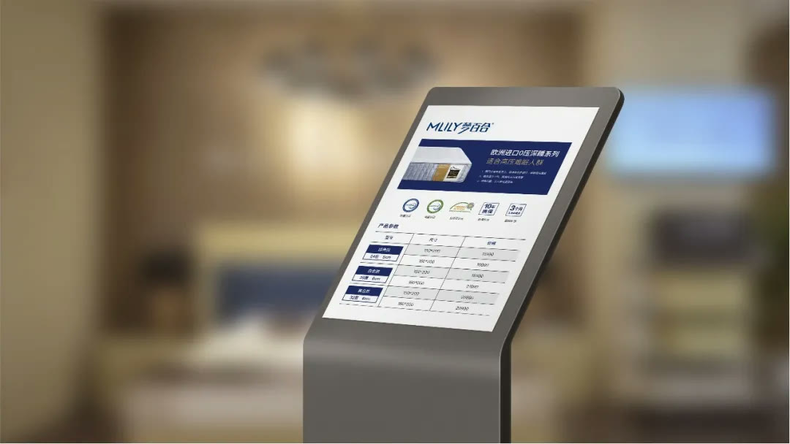
● 9 月“梦百合 0 压床垫 全民足球射门赛”以 5 月份的“ 51 · 0 压劳动节”为例，劳动节是给劳动者放假放松的，所以命名为“ 0 压劳动节”，既结合了梦百合的品牌基因，也给每一位劳动者一个放松解压的理由。再加 1 个购买理由“拿上工牌折上折”，整个活动就好玩了，就不再是单纯的打折落地活动了；这样一波操作，带来的成效是，原定目标 3000 万，实际完成 4097 万，并且提前 10 天完成销售计划。
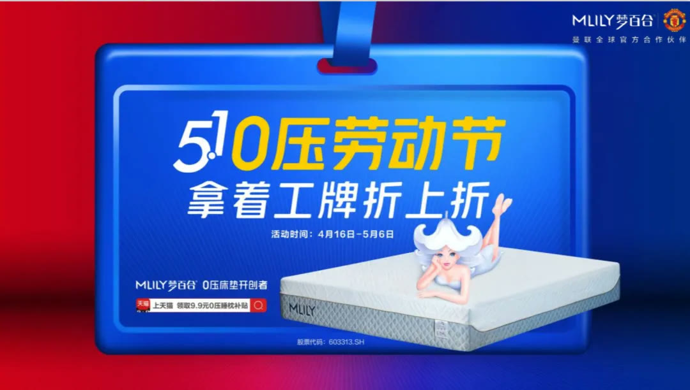
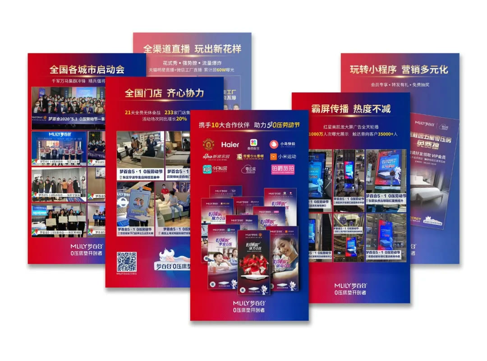
5基于困扰全球 1 / 3 人口的睡眠问题明确企业的经营使命和经营逻辑华杉老师说：“好公司要以天下为己任。”那什么样的公司是好公司呢？日本伊那食品社长塚越宽说：“谁都认为它是好公司，才是好公司。”这里的“谁”，讲的是四个角色，也是好公司的四个标准：1 ）员工认为它是好公司；2 ）顾客认为它是好公司；3 ）供应商认为它是好公司；4 ）社会认为它是好公司。一个好公司，必须能解决某个社会问题。这一社会问题，也可以从以下 4 个痛点的角度来理解。在业界,人们称我们倪总为“软床布道者”，雪球上有人评论他“性如烈火”，我想这应该跟他的心中之痛有一定的关系吧。放眼行业（行业痛点）：今天你进入大多数的床垫企业门店，被问到的最多的是“你喜欢软一些的、还是硬一些的”？少有考虑顾客的身体实际需要而去迎合甚至蒙蔽消费者，推荐看似舒适实则有可能危害身体的产品。
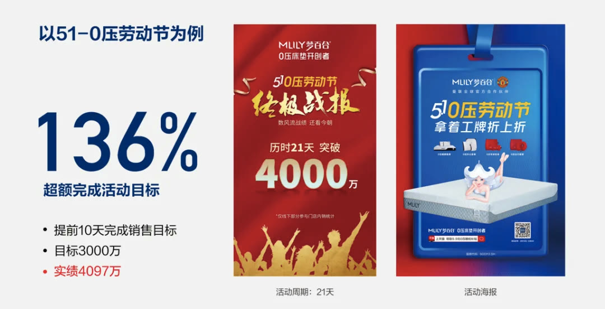
面对顾客（消费者&社会痛点）：全球有 27 %的人存在睡眠质量问题，中国有近 4 亿的人群有睡眠障碍，但大家普遍缺少正确的睡眠和床垫选择知识，习惯睡硬床。面对自己（企业家自己的痛点）：倪总说：“我希望改变中国人睡硬床的错误观念，因为我们都需要身心放松，在压力日渐增大的当今社会，国人的确需要一个舒适、深度、健康的睡眠。我就是要扭转国人睡硬床的习惯，中国人这样一个人口大国，腰椎间盘突出的比例是最高的，就是睡硬床的睡出来的。床垫说软和硬都不太合适。所以我们先要把睡眠理念向民众普及，更建议大家使用能减震释压的梦百合 0 压床垫。”企业的本质是为社会解决问题，企业战略不是企业的战略，而是企业为解决某一社会问题，而为社会制定的战略。面对顾客、行业、社会的痛点，选择承担解决睡眠这个社会问题的责任，这是梦百合的使命：●改变中国人睡硬床的不良习惯●推广科学的睡眠和床垫知识●提升人类的深度睡眠一个源自倪总但可能无法证实的数据我想转述给大家：如果全中国的人都能用上梦百合的床垫，可以给这个社会节省 1 . 5 亿的劳动力，因为压力小、睡得好， 23 . 3 %的深度睡眠时间提升，带来的是更好的精神状态、更高的工作效率。华与华的经营理念是让企业少走弯路，梦百合的的经营使命是提升人类深度睡眠！希望借这期的案例分享，让看到这篇文章的各位能够了解华与华，在企业发展和品牌建设方面能够少走弯路；让更多的人了解梦百合，用上梦百合 0 压床垫，压力小、睡得好！MLILY梦百合官方旗舰店
小程序本文总结从 2018 年开始，华与华为梦百合品牌确立「 0 压战略」，创意了产品命名、品牌定位、品牌超级符号、传播话语体系、建立了产品科学及门店包装的标准化系统，从 0 到 1 奠定品牌核心资产。帮助梦百合连续 3 年在国内市场实现高增长（ 2018 、 2019 同比增长均超过 100 %，2020 年上半年在家居行业普遍不景气的情况下，仍然逆势增长超过 30 %），让梦百合在从出口代工进入内循环、建立自主大品牌的道路上真正少走弯路！
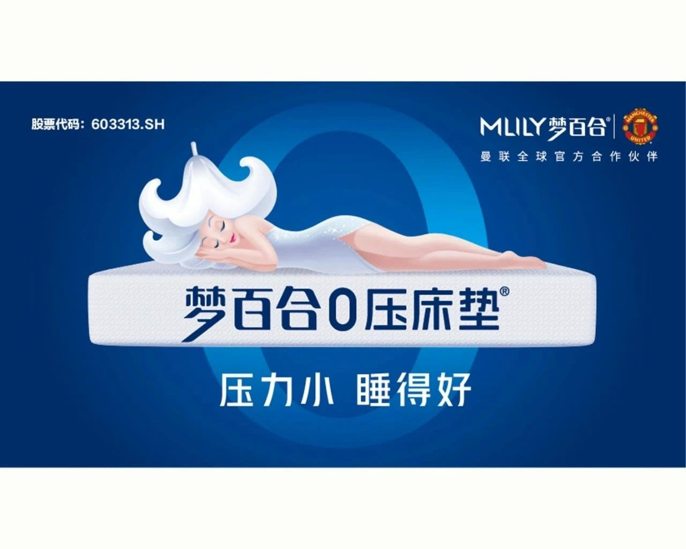